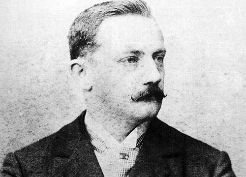

Os registros mais antigos sobre o Futebol praticados no Brasil datam de 1875 em Curitiba. Porém ele se popularizou após ser introduzido a burguesia paulistana por Charles Miller.
[imagem Charles Miller]

Um jovem brasileiro que, em 1885, após viagem pela Inglaterra, trousse consigo duas bolas de futebol e passou a tentar converter a comunidade de expatriados britânicos da cidade de São Paulo de jogadores de críquete para futebolistas, criando um clube de futebol no Brasil. O futebol se tornou rapidamente uma grande paixão para os brasileiros, que frequentemente refere-se ao país como "país do futebol", muito por conta das conquistas da seleção brasileira de futebol.
Principais títulos da seleção Brasileira
[Arquivo:Djalma Santos - 1958]
1958 - Copa da Suécia
1962 - Copa do Chile
1970 - Copa do México
1994 - Copa do EUA
2002 - Copa do Japão e Coréa do Sul
1958 - Copa da Suécia
1962 - Copa do Chile
1970 - Copa do México
1994 - Copa do EUA
2002 - Copa do Japão e Coréa do Sul
1958 - Copa da Suécia
Primeiro título mundial da seleção
1962 - Copa do Chile
Segundo título mundial da seleção
1970 - Copa do México
Terceiro título mundial da seleção
1994 - Copa do EUA
Quarto título mundial da seleção
2002 - Copa do Japão e Coréa do Sul
Quinto título mundial da seleção
[Arquivo:Werner Haberkorn - Salve Copa do Mundo - Brasil Campeão Mundial 1958, Acervo do Museu Paulista da USP]
A SELEÇÃO BRASILEIRA HOJE
Atualmente a seleção Brasileira ainda é a maior campeã das copas mundiais de futebol, o futebol ainda é o esporte mais praticado no país, crianças e adultos tem como hobbie essa modalidade.